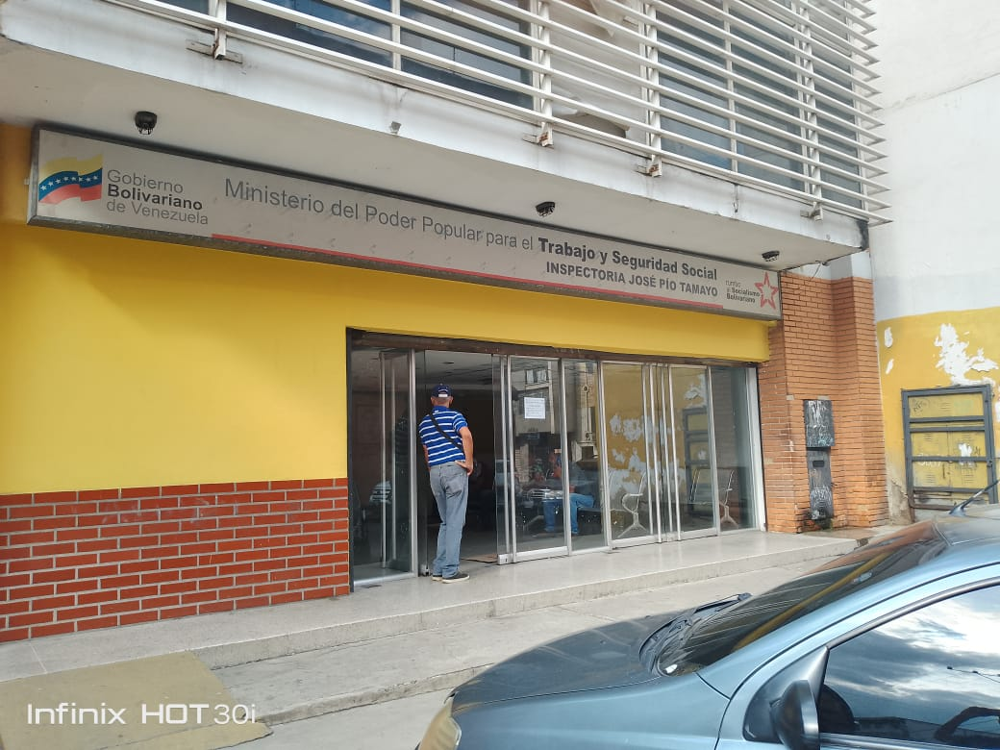

Inicio
Inspectoría del Trabajo sede Pío Tamayo

En el progreso tecnológico, la Institución Gubernamental “Inspectoría del Trabajo sede Pío Tamayo” como justicia laboral en el vibrante escenario de Barquisimeto, Estado Lara. Sin embargo, este bastión de derechos laborales no está exento de desafíos, especialmente en el ámbito tecnológico. Las computadoras, esenciales para el funcionamiento diario de la Inspectoría, enfrentan una crisis silenciosa: la falta de mantenimiento preventivo. Este problema no solo obstaculiza la eficacia operativa de la institución, sino que también socava la calidad de los servicios ofrecidos a los ciudadanos y trabajadores.
 Los beneficiarios directos de este proyecto son los trabajadores y ciudadanos que confían en la Inspectoría para salvaguardar sus derechos laborales. Además, el personal de la Inspectoría, encargado de facilitar estos servicios esenciales, también se beneficiará directamente al contar con herramientas tecnológicas eficientes y confiables para llevar a cabo sus tareas. En un sentido más amplio, toda la comunidad de Barquisimeto se beneficia, ya que un entorno laboral más justo y equitativo contribuye al desarrollo sostenible de la región.
Los beneficiarios directos de este proyecto son los trabajadores y ciudadanos que confían en la Inspectoría para salvaguardar sus derechos laborales. Además, el personal de la Inspectoría, encargado de facilitar estos servicios esenciales, también se beneficiará directamente al contar con herramientas tecnológicas eficientes y confiables para llevar a cabo sus tareas. En un sentido más amplio, toda la comunidad de Barquisimeto se beneficia, ya que un entorno laboral más justo y equitativo contribuye al desarrollo sostenible de la región.
Problema: Desgaste Tecnológico y Falta de Mantenimiento
El problema central radica en la falta de mantenimiento preventivo de las computadoras de la Inspectoría. La obsolescencia de hardware, la falta de actualizaciones de software y la ausencia de prácticas de mantenimiento adecuadas han llevado a un estado de ineficiencia y mal funcionamiento de los sistemas informáticos. Esta situación afecta negativamente la eficacia de la Inspectoría en la protección de los derechos laborales y compromete la calidad del servicio brindado a los ciudadanos.
En materia educativa cumple con las características y exigencias locales y regionales.